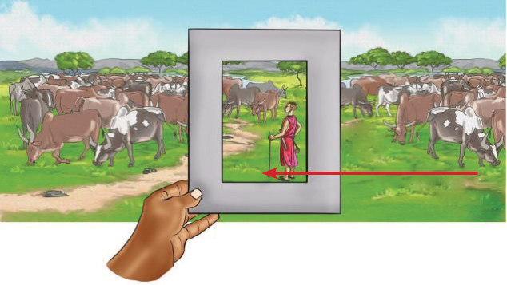
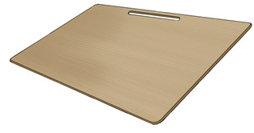

Equipment for drawing
Drawing equipment is a tool which artists use in drawing activities. Drawing tools include a sharpener, eraser, viewfinder, drawing board, artist tape, blending tool, table and easel.
Viewfinder: This is an instrument which is used by an artist to select only a particular section of scenery to be drawn. This is done when scenery covers a wide area. Figure 2.14 shows a view finder.

Drawing board: This is a flat board on which a drawing paper can be placed for an artist or a designer to work. Figure 2.15 shows a picture of a drawing board.

Blending tools: These are tools used to create soft-tone value on a drawing. These tools can also be used in softening the edges of a drawing and changing dark values to bright values. Figure 2.16 shows blending tools.